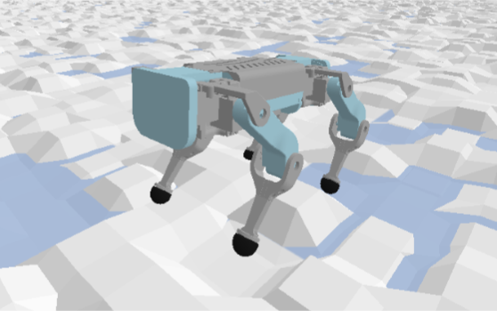
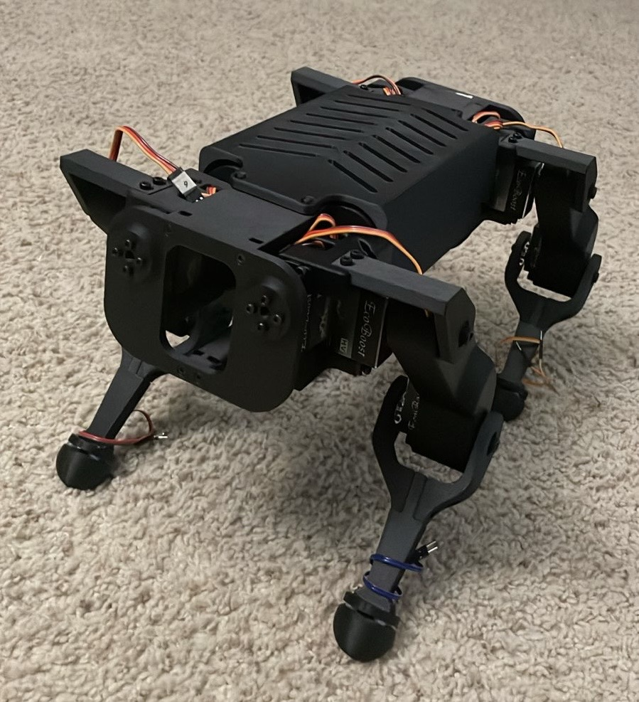
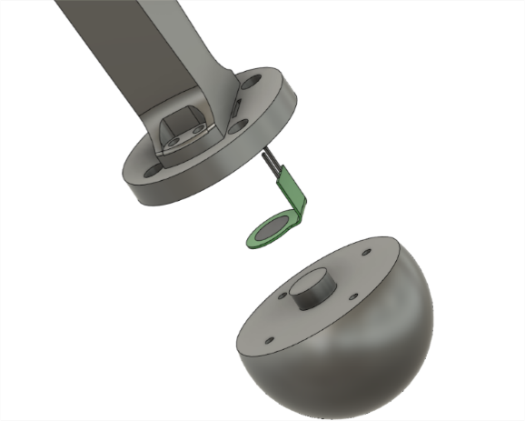
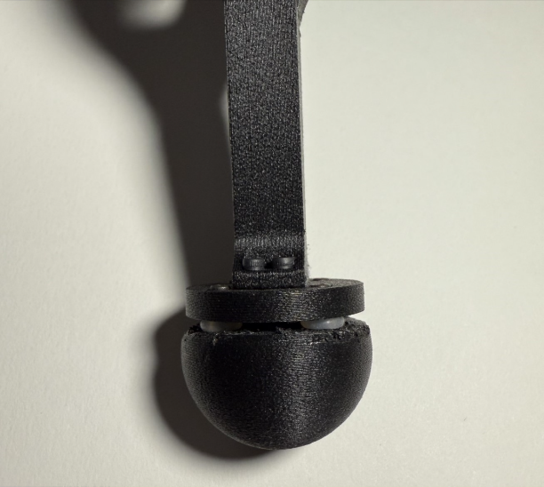
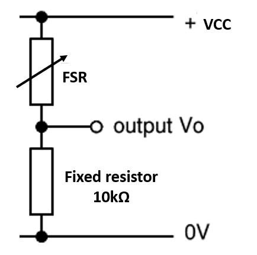
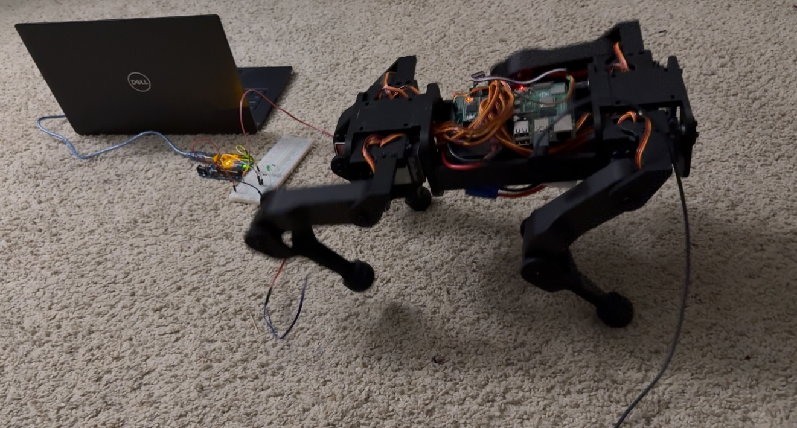
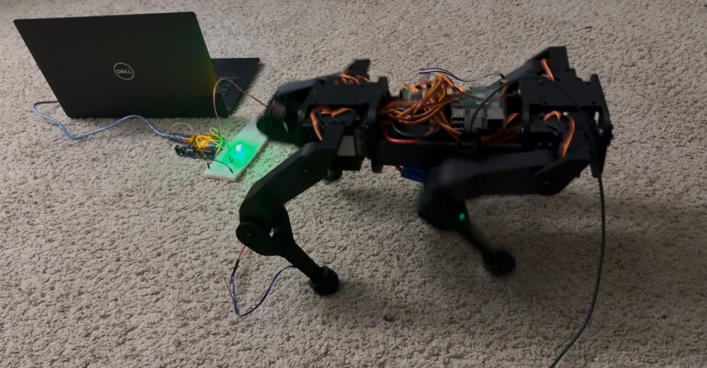

MINImal Robot Dog


Training

Contact Sensing


We explored various methods by which such contact estimation could be enabled. We chose FSR with a small form factor (10mm X 20 mm) and a force sensing range of 0.2N to 20N. The FSR is sandwiched between the lower-leg and foot of the robot. The lower leg and foot are separated by 4 silicon O-rings when assembled. When the foot contacts the ground, the O-rings are compressed and the cylindrical boss of the foot applies force on the FSR, decreasing its resistance. When the foot breaks contact with the ground, the O-rings decompress, causing the foot to return to its original position. The force applied on the FSR is decreased, increasing its resistance.

We use a voltage divider circuit to convert the varying resistance value to a voltage value, which is then read by a microcontroller.

